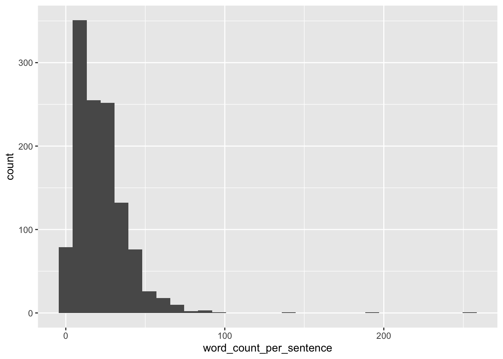

library(tidyverse)
library(here)purrr-map03
R
map
tidyverse
Exercise
Importieren Sie das Grundatzprogramm der Partei AfD (in der aktuellsten Version). Tokenisieren Sie nach Sätzen. Dann entfernen Sie alle Zahlen. Dann zählen Sie die Anzahl der Wörter pro Satz und berichten gängige deskriptive Statistiken dazu.
Solution
Text aus PDF-Dateien kann man mit dem Paket pdftools einlesen:
library(pdftools)
d_path <- paste0(here(), "/data/afd-grundsatzprogramm-2022.pdf")
d <- tibble(text = pdf_text(d_path))Dann erstellen wir eine Tidy-Version und tokenisieren nach Sätzen:
library(tidytext)
d2 <-
d %>%
unnest_sentences(output = word, input = text)
head(d2)| word |
|---|
| programm für deutschland. |
| das grundsatzprogramm der alternative für deutschland. |
| 2 programm für deutschland | inhalt präambel 06 4 | außen- und sicherheitspolitik 28 1 | demokratie und grundwerte 07 4.1 vereinte nationen reformieren 30 4.2 nato als verteidigungsbündnis 30 1.1 volksabstimmungen nach schweizer vorbild 09 4.3 osze und europäische sicherheitsstruktur 31 1.2 schlanker staat für freie bürger 09 4.4 bundeswehr stärken 31 1.3 die gewaltenteilung gewährleisten 10 4.4.1 keine europäische armee 31 1.4 trennung von amt und mandat 10 4.4.2 wehrpflicht wieder einsetzen 32 1.5 macht der parteien beschränken 11 4.5 entwicklungshilfe 32 1.5.1 parteienfinanzierung dem verfassungsrecht anpassen 11 1.5.2 freie listenwahl und freies mandat 12 5 | arbeitsmarkt und sozialpolitik 34 1.5.3 verkleinerung des bundestages 12 1.5.4 wider das berufspolitikertum: amtszeit begrenzen 13 5.1 arbeitsmarkt von unnötiger bürokratie befreien 36 1.5.5 direktwahl des bundespräsidenten durch das volk 13 5.2 bundesagentur für arbeit auflösen und kommunale 1.6 lobbyismus eindämmen 13 jobcenter aufwerten 36 1.6.1 private rentenvorsorge für parlamentarier 14 5.3 mindestlohn beibehalten 36 1.6.2 einführung eines straftatbestandes der 5.4 reform der sozialen sicherungssysteme 36 steuerverschwendung 14 5.4.1 finanzielle benachteiligung von familien beseitigen 37 5.4.2 “aktivierende grundsicherung” - arbeit, die sich lohnt 37 2 | europa und euro 15 5.4.3 kinder und erziehungsleistung bei der rente berücksichtigen 37 2.1 ein europa der vaterländer 17 5.4.4 pflege durch angehörige aufwerten 37 2.2 kompetenzen an die nationalstaaten zurückgeben 17 2.3 bündelung gemeinsamer europäischer interessen 18 6 | familien und kinder 39 2.4 volksabstimmung über den euro 18 2.5 keine deutsche haftung für ausländische banken 21 6.1 bekenntnis zur traditionellen familie als leitbild 41 6.2 mehr kinder statt masseneinwanderung 41 3 | innere sicherheit und justiz 23 6.3 mehr unterstützung für familien 42 6.4 wirtschaftliche zukunft trotz demografiekrise 42 3.1 polizei stärken und strafjustiz verbessern 25 6.5 diskriminierung der vollzeit-mütter stoppen 43 3.2 weisungsfreie staatsanwälte, unabhängige richter 6.6 alleinerziehende unterstützen. |
| familien stärken 44 und parteiferne rechnungshöfe 25 6.7 willkommenskultur für neu- und ungeborene 44 3.3 angriffe auf amtspersonen härter bestrafen 26 3.4 opferschutz statt täterschutz 26 3.5 waffenrecht muss nicht verschärft werden 26 3.6 kein datenschutz für täter 27 3.7 organisierte kriminalität nachhaltig bekämpfen 27 3.8 zivil- und fachgerichte sind ein standortfaktor 27 3.9 deutsche grenzen schützen 27 |
| 3 programm für deutschland | inhalt 7 | kultur, sprache und identität 45 9 | einwanderung, integration und asyl 57 7.1 deutsche kultur, sprache und identität erhalten 47 9.1 keine irreguläre einwanderung über das asylrecht 59 7.2 deutsche leitkultur statt multikulturalismus 47 9.1.1 asylzuwanderung - für einen paradigmenwechsel 59 7.3 die deutsche sprache als zentrum unserer identität 47 9.1.2 rückführung - schluss mit fehlanreizen und 7.4 kultur und kunst von einflussnahme der parteien befreien 48 falscher nachsicht 60 7.5 für eine zeitgemäße medienpolitik: rundfunkbeitrag abschaffen 48 9.2 einwanderung aus eu-staaten 61 7.6 der islam im spannungsverhältnis zu unserer werteordnung 48 9.3 gesteuerte einwanderung aus drittstaaten 62 7.6.1 der islam gehört nicht zu deutschland 49 9.4 integration - mehr als nur deutsch lernen 63 7.6.2 kritik am islam muss erlaubt sein 49 9.5 kosten der einwanderung - transparenz herstellen 63 7.6.3 auslandsfinanzierung von moscheen beenden 49 9.6 einwandererkriminalität - nichts verschleiern, 7.6.4 keine öffentlich-rechtliche körperschaft für nichts verschweigen 64 islamische organisationen 50 9.7 einbürgerung - abschluss gelungener integration 65 7.6.5 keine vollverschleierung im öffentlichen raum 50 10 | wirtschaft, digitale welt und verbraucherschutz 66 8 | schule, hochschule und forschung 51 10.1 freier wettbewerb sichert unseren wohlstand 67 8.1 forschung und lehre: in freiheit und als einheit 52 10.2 soziale marktwirtschaft statt planwirtschaft 67 8.1.1 autonomie durch grundfinanzierung stärken 52 10.3 internationale wirtschaftspolitik neu ausrichten 67 8.1.2 förderung der “gender-forschung” beenden 52 10.4 hohe standards für handelsabkommen 68 8.1.3 diplom, magister und staatsexamen wieder einführen 52 10.5 bürokratie abbauen 68 8.1.4 studienanforderungen erhöhen 53 10.6 den technologiestandort deutschland voranbringen 68 8.2 unser schulsystem: stark durch differenzierung 53 10.7 staatliche subventionen reduzieren und befristen 69 8.2.1 die einheitsschule führt zu qualitätsverlust 53 10.8 keine privatisierung gegen den willen der bürger 69 8.2.2 wissensvermittlung muss zentrales anliegen bleiben 53 10.9 der mittelstand als herz unserer wirtschaftskraft 69 8.2.3 leistungsbereitschaft und disziplin stärken 54 10.10 digitalisierung als chance und herausforderung 69 8.2.4 politisch-ideologische indoktrination darf es an 10.10.1 quelloffene software und sichere hardware 69 der schule nicht geben 54 10.10.2 sichere kommunikation als standortvorteil 8.2.5 duale berufliche bildung stärken und erhalten 54 und bürgerrecht 70 8.2.6 keine inklusion “um jeden preis”. |
| förder- und 10.10.3 deutsche literatur im inland digitalisieren 70 sonderschulen erhalten 54 10.11 verbraucherschutz modernisieren und stärken 70 8.2.7 koranschulen schließen. |
Dann entfernen wir die Zahlen:
d3 <-
d2 %>%
mutate(word = str_remove_all(word, pattern = "[:digit:]+"))Prüfen wir, ob es geklappt hat:
d2$word[10][1] "weniger subventionen 88 13.7 fischerei, forst und jagd: im einklang mit der natur 88 13.8 flächenkonkurrenz: nicht zu lasten der land- und forstwirtschaft 88"d3$word[10][1] "weniger subventionen . fischerei, forst und jagd: im einklang mit der natur . flächenkonkurrenz: nicht zu lasten der land- und forstwirtschaft "Ok.
Dann zählen wir die Wörter pro Satz:
d4 <-
d3 %>%
summarise(word_count_per_sentence = str_count(word, "\\w+"))
head(d4)| word_count_per_sentence |
|---|
| 3 |
| 6 |
| 196 |
| 40 |
| 254 |
| 15 |
Visualisierung:
d4 %>%
ggplot(aes(x = word_count_per_sentence)) +
geom_histogram()
library(easystats)
describe_distribution(d4)| Variable | Mean | SD | IQR | Min | Max | Skewness | Kurtosis | n | n_Missing |
|---|---|---|---|---|---|---|---|---|---|
| word_count_per_sentence | 21.94444 | 17.01216 | 19 | 1 | 254 | 3.92795 | 39.4383 | 1206 | 0 |
Categories:
- R
- map
- tidyverse